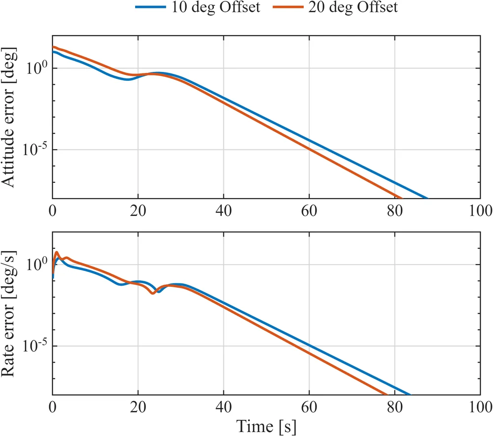
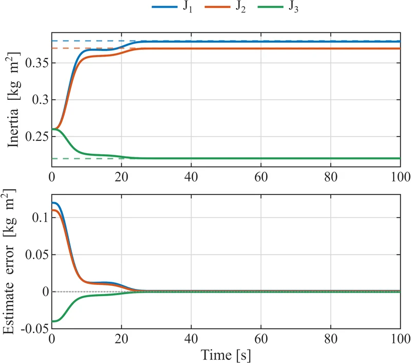
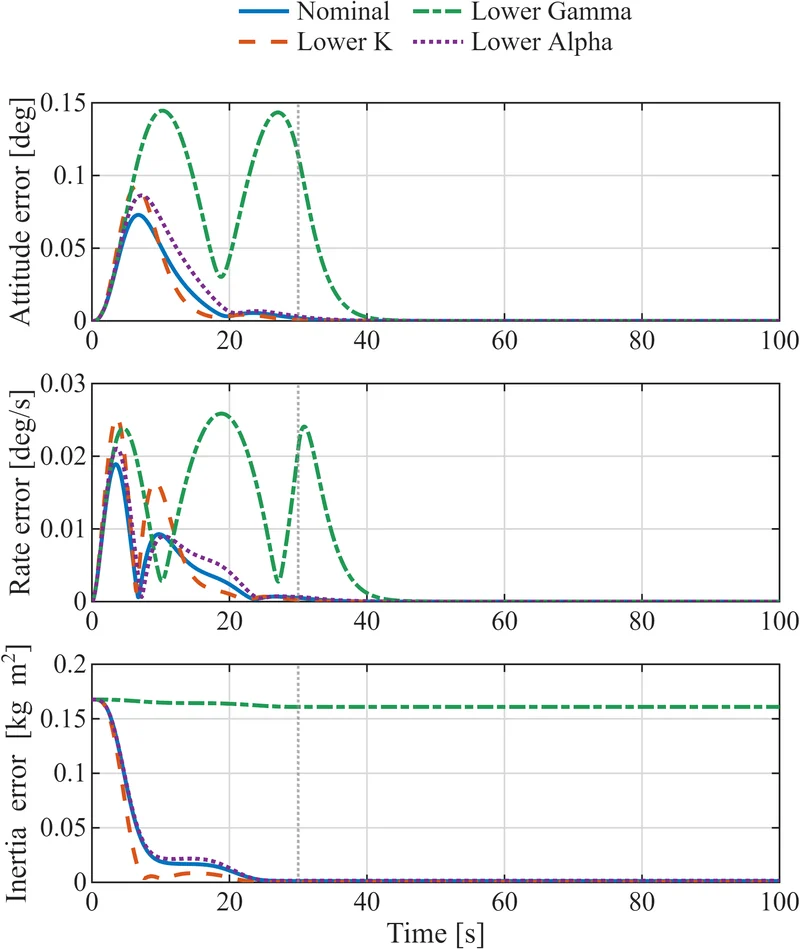
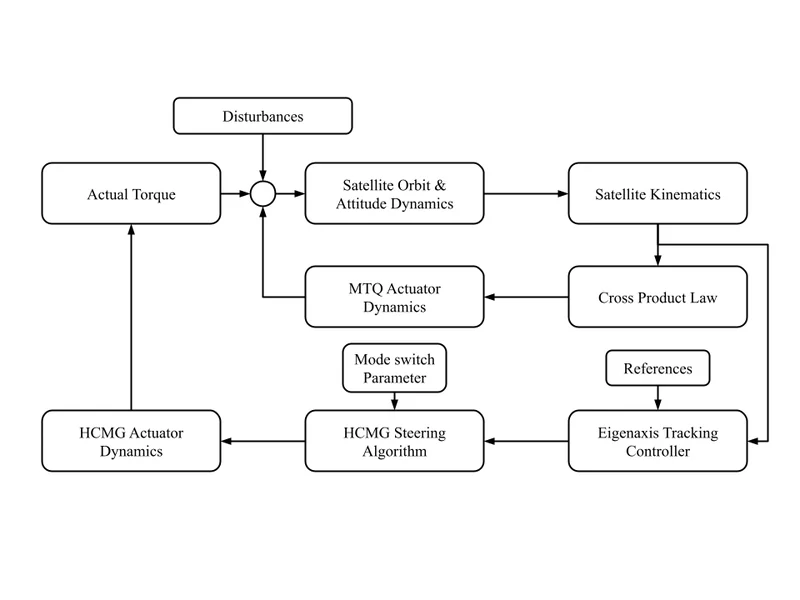
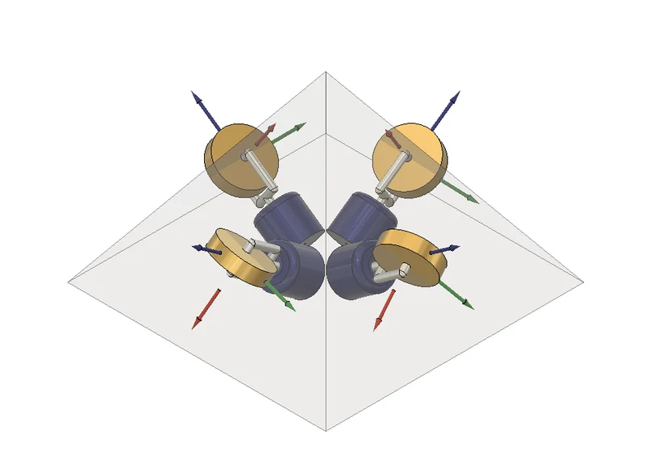
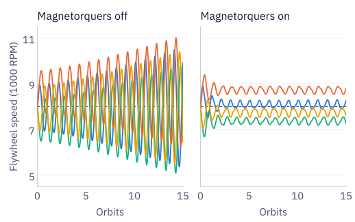
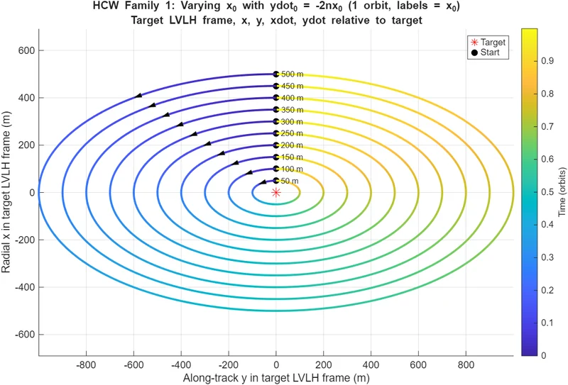
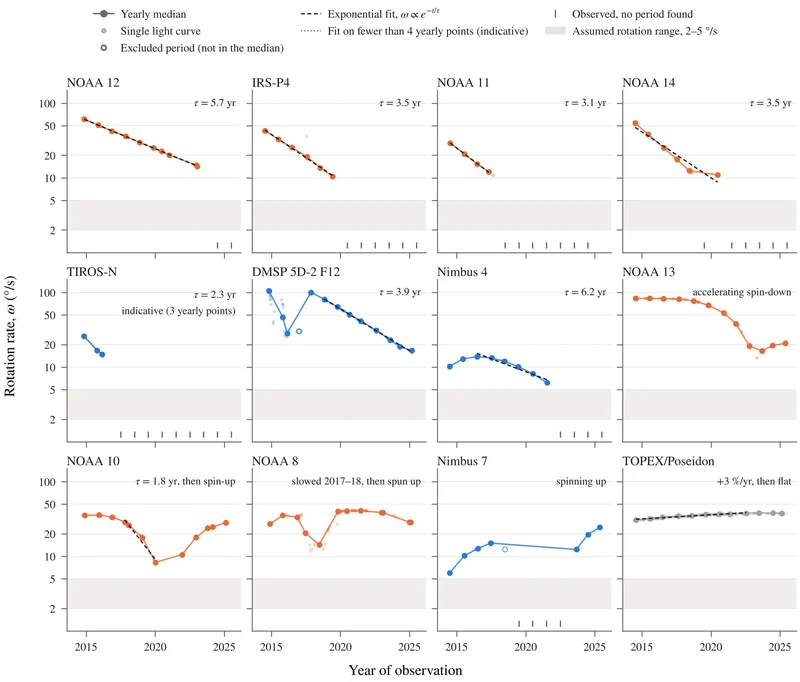
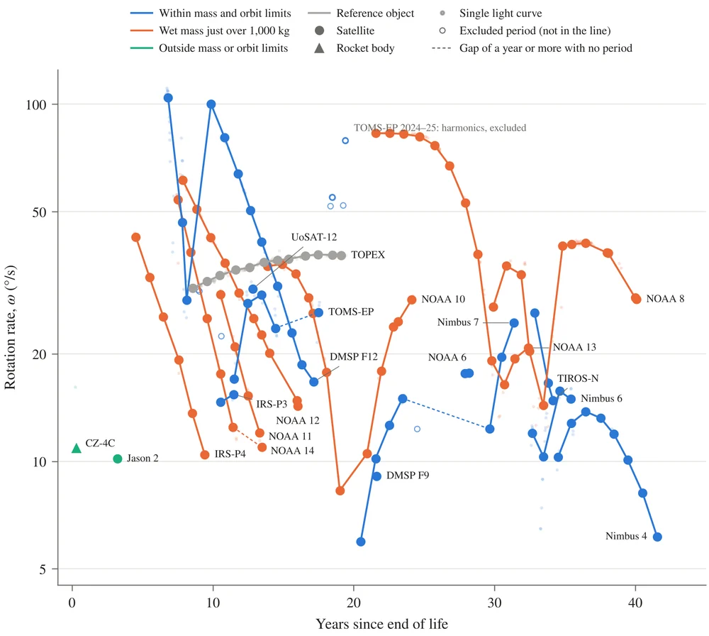

Aerospace engineering, University of Florida
Krittin Jindamai (Yim)
I work on guidance, navigation, and control for spacecraft and satellites.
I'm an undergraduate researcher in the Space Systems Group and the Nonlinear Control Research Group at UF. My work covers attitude control with hybrid control moment gyroscopes, safety-critical control with control barrier functions, and analysis of defunct satellites in LEO.
Selected work
Six research and engineering projects.
-



Adaptive Attitude Tracking of a CMG-Actuated Spacecraft with Unknown Inertia
An adaptive controller that tracks a commanded attitude without knowing the spacecraft's inertia, driving a four-CMG pyramid through a pseudoinverse steering law. Asymptotic tracking is proved with Lyapunov analysis and Barbalat's lemma.
From a 20° initial error, the attitude error falls below 0.001° in 46 s, with inertia estimates starting up to 32% off.
-



HCMG momentum management using magnetorquers
A 12U CubeSat simulation in sun-synchronous orbit that slews with a hybrid CMG array, locks into reaction-wheel mode for precision nadir pointing, and uses magnetorquers to shed the momentum that disturbances build up.
With desaturation, flywheel speeds stay bounded over 15 orbits. Without it they drift within three and control authority is lost.
-
Lunar hopper trajectory optimization and navigation
Optimized a minimum-wet-mass trajectory for a lunar hopper operating at the lunar south pole using Hermite–Simpson collocation, CasADi and IPOPT. Validated a custom inertial navigation system using an error-state extended Kalman filter (EKF).
A 5,363 kg wet-mass design, with median touchdown position-estimation errors of 12 to 13 m over 100 Monte Carlo runs.
-



HARMONIA: unified docking and debris-capture architecture
A target dataset for debris capture. Rotation rates for 44 defunct low-Earth-orbit satellites from folded Mini-MegaTORTORA light curves, grapple-point distances from bus and adapter-ring dimensions, and Hohmann and Clohessy–Wiltshire analysis for rendezvous.
Satellites inactive for longer rotate more slowly. Multi-year records show spin-down with e-folding times of about 2 to 6 years.
-
Apogee control airbrake for Project TerraGator
A cam-slot airbrake and its flight computer. Embedded C++ predicts the trajectory in real time, a Kalman filter estimates position, quaternion attitude and IMU biases, and a PID controller drives the brake to a declared apogee.
Three launches within 20 ft of the target altitude, with a team of 11.
-
Safe mode switchingResult plot to be added
CLF-MCBF for safe HCMG mode switching
Matrix-valued control barrier functions applied to HCMG mode switching, solved as a constrained semidefinite optimization so the gimbals lock and unlock safely. Now being extended to a unified CLF-CBF controller that needs no nominal controller.
Nonsingular gimbal locking validated across maneuvers in MATLAB. First-author conference paper in draft.